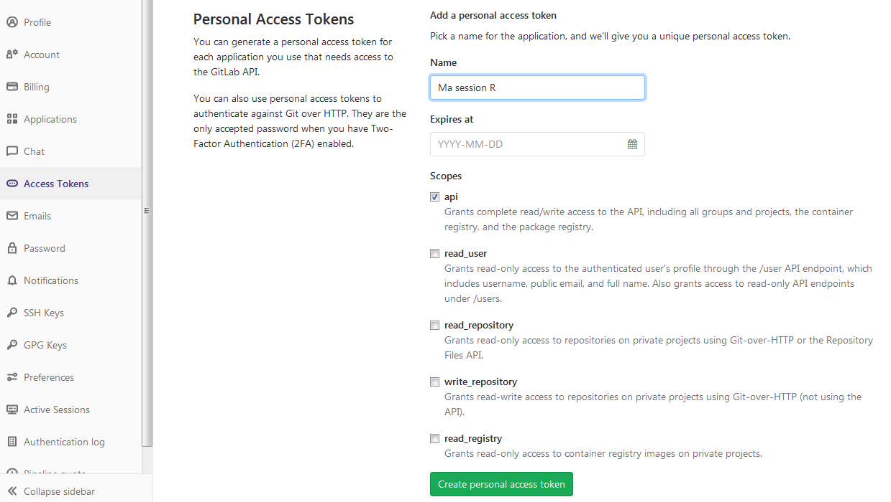

Chapitre 5 Créer un package R par la pratique
Introduction
Pré-requis
Connaissances
- savoir installer et utiliser des packages;
- savoir créer un nouveau projet sur une forge git;
- savoir réaliser des commits et les pousser vers la forge.
Configuration
Vous aurez besoin des packages suivants :
available,
desc,
usethis (version 1.5.1 au minimum),
gitlabr (version 1.1.6 au minimum),
git2r,
devtools,
roxygen2 (version 6.0.0 au minimum),
roxygen2md,
testthat,
et covr.
Installez-les si besoin (vous pouvez exécuter le code ci-dessous).
req_pkgs <- c(
'available',
'desc',
'usethis',
'gitlabr',
'git2r',
'devtools',
'roxygen2',
'roxygen2md',
'testthat',
'covr'
)
lapply(req_pkgs, function(pkg) {
if (system.file(package = pkg) == '') install.packages(pkg)
})Brisons quelques mythes !
Créer un package peut sembler intimidant de prime abord. En effet, on peut utiliser R pendant des années, utiliser des dizaines de packages sans avoir appris à en créer un. Dès lors, un grand nombre de mythes sont présents autour de la création de packages.
Voici quelques uns de ces mythes :
- créer un package est difficile;
- la création de packages est réservée aux informaticiens;
- il faut être un expert de
Rpour créer un package; - créer un package fera de moi une star;
- …
Certaines personnes se plaisent à véhiculer ces mythes. Bien évidemment, toutes ces idées sont fausses :
- créer un package n’est pas difficile : il y a quelques années, c’était relativement pénible. Cependant, un grand nombre d’outils que nous allons voir et utiliser ont rendu facile la création de package.
- créer un package est pour tous. Cependant, la création d’un package va peut-être vous amener à vous poser des questions que vous ne vous étiez jamais posées auparavant, ou au contraire vous apporter des réponses à des questions que vous vous posiez. Étant donné que ces questions portent sur la façon dont on écrit et structure ses programmes tout en y apportant de la rigueur, vous aurez peut-être l’impression d’être en train de faire du développement informatique. Mais c’est faux : la rigueur n’est pas réservée aux informaticiens. Les statisticiens sont aussi rigoureux.
- créer un package ne nécessite pas d’expertise en
R. Il s’agit simplement d’une façon (très) rigoureuse d’organiser son travail. - créer un package ne fera pas malheureusement pas de vous une star car comme vous allez le voir c’est quelque chose à la portée de tout le monde.
Certes, la création de packages nécessite d’acquérir de nouvelles connaissances et de nouvelles notions, mais elles ne sont pas particulièrement complexes. De plus, ces notions sont largement transposables d’un langage de programmation à un autre, car la plupart des langages utilisent la notion de packages (parfois appelés librairies ou modules dans d’autres langages).
Un avantage de la création de packages est que cela va permettre de structurer vos programmes et d’y ajouter beaucoup de rigueur. La principale compétence à laquelle on fera donc appel lors de la réalisation d’un package est la rigueur.
Quand créer un package ?
Voici une règle d’or qui devrait vous guider pour savoir quand vous devez créer un package:
- lorsque vous réalisez une analyse, si vous utilisez plus de deux fois une même portion de code (que vous avez “copié-collé”), vous devez créer une fonction;
- si vous réutilisez une fonction entre deux analyses (en “copiant-collant” le code source de cette fonction), vous devez faire un package.
Un package vous permettra de réutiliser aisément des “bouts de code” entre différentes analyses et vous obligera à adopter toute la rigueur nécessaire à ce type d’exercice. Réaliser un package est un moyen simple de partager votre code : combien de fois avez-vous échangé des bouts de code par mail avec un collègue ? C’est précisément pour répondre à cette problématique lié au travail collaboratif que les packages ont été créés.
Question : si je n’ai qu’une seule fonction que je souhaite réutiliser entre plusieurs analyses ou partager avec un collègue, est-il nécessaire de créer un package ?
Oui, c’est même fortement recommandé. Il est très facile de créer un package qui ne comprend qu’une seule fonction. Cela ne prend pas beaucoup de temps et structurera votre travail.
Créer un package doit donc devenir une habitude de travail et une bonne pratique. En cas de doute ou d’oubli, vous pouvez toujours retourner consulter le petit livre rouge des packages R (Wickham 2015).
Le concept de package
Dans cette partie, nous introduisons la notion de package.
Exportation et importation
Un package offre des fonctions prêtes à l’emploi. Ces fonctions sont disponibles après un appel à library() ou bien en utilisant ::. Ces fonctions “prêtes à l’emploi” sont des fonctions dites exportées par le package. Cette notion est à distinguer des fonctions internes à un package auxquelles l’utilisateur ne peut accéder.3 C’est le créateur du package qui décide des fonctions qu’il souhaite exporter ou bien conserver pour une utilisation interne sachant que l’utilisateur extérieur ne pourra accéder qu’aux fonctions exportées
On peut se représenter un package comme un ensemble clos qui par défaut n’a aucun échange avec l’extérieur. Pour qu’une fonction du package soit disponible pour un utilisateur, il faut que le créateur du package décide de l’exporter. De façon symétrique, lorsque vous créez un package, si vous souhaitez utiliser une fonction d’un autre package, vous allez devoir le préciser. Il s’agit d’un mécanisme nommé importation.
Cette notion (exportation et importation) est le principal concept nouveau. Il peut paraître relativement abstrait au début. Retenez que par défaut, un package est isolé du monde extérieur : il n’exporte aucune fonction et n’en importe aucune. Ce sera à vous de décider et de préciser quelles fonctions seront exportées par votre package et quelles fonctions devront être importées pour que votre code puisse fonctionner.
Contrôle de conformité
Un package doit répondre à un ensemble de normes. L’objectif de la formation n’est pas d’apprendre l’ensemble de ces normes qui sont décrites dans le manuel officiel de R Writing R Extensions.4
En effet, nous utiliserons un ensemble d’outils (principalement les packages devtools et usethis) qui nous permettront de gérer correctement la création d’un package. Cependant, nous contrôlerons en permanence que notre package est conforme aux normes attendues par R en effectuant des contrôles de conformité.
Dans le jargon R, un contrôle de conformité s’appelle un check. Cette étape est fondamentale. Vous ne devrez jamais la négliger.
Il s’agit de passer une batterie de contrôles pour voir si les modifications que vous opérez à votre package sont conformes :
- aux normes exigées par
R; - aux tests que vous aurez vous-mêmes définis.
Il s’agit de l’action que vous réaliserez le plus fréquemment. Si vous négligiez de le faire, vous pourriez à terme vous retrouver dans des situations très délicates. Il y a trois façons de réaliser ce contrôle de conformité :
dans l’onglet Build, cliquer sur le bouton Check;
utiliser le raccourci clavier
Ctrl+Shift+E;dans la console de R, exécuter :
devtools::check()
Il s’agit de l’étape la plus importante.
Notez-là dès maintenant, car vous allez l’utiliser très souvent.
Feuille de route pour créer un package
Comme la création de package est une pratique très courante, il existe des packages pour nous assister dans la création de packages… Nous pourrions évidemment tout créer à la main, mais cela ne présente pas d’intérêt particulier à part celui de nous faire perdre du temps avec des tâches à faible valeur ajoutée.
Voici la feuille de route pour créer un package :
# 1. Initier un package -------------------------------------
# Étapes à ne faire qu'une seule fois
# 1.a. Choisir un nom
nom <- "monpetitpaquet"
available::available(nom, browse = FALSE)
# 1.b. Créer un projet RStudio de type "package"
usethis::create_package(file.path("~", nom))
# 1.c. Renseigner les méta-données du package
# Titre du package
desc::desc_set(
Title = "Mon Premier Paquet"
)
# Désigner les auteurs, contributeurs et
# les détenteurs des droits de propriété intellectuelle
desc::desc_set_authors(c(
person(
"Mon prénom",
"Mon nom",
role = c("aut", "cre"),
email = "monprenom.monnom@insee.fr"
),
person(
family = "Institut national de la statistique et des études économiques",
role = "cph"
)
))
# Décrire ce que fait le package
desc::desc_set(
Description = "J'ai créé ce package pour apprendre. Ne l'installez pas il ne fait rien d'intéressant pour l'instant."
)
# Choisir une licence
usethis::use_mit_license(
name = "Institut national de la statistique et des études économiques (Insee)"
)
# Si la documentation du package est en français
desc::desc_set(Language = "fr")
# 2. Configurer les outils de développement -----------------
# Étapes à ne faire qu'une seule fois
# 2.a. Créer un dépôt vide dans GitLab
# il est possible d'automatiser cette étape, voir le support de formation
# 2.b. Utiliser git dans le projet RStudio
usethis::use_git()
# 2.c. Créer le lien entre le dépôt GitLab
# et le projet RStudio
repo_url <- "https://gitlab.com/RLesur/monpetitpaquet.git"
usethis::use_git_remote(url = repo_url)
git2r::push(name = "origin",
refspec = "refs/heads/master",
set_upstream = TRUE
)
# 2.d. Utiliser testthat pour les tests
usethis::use_testthat()
# 2.e. Utiliser l'intégration continue de GitLab
usethis::use_gitlab_ci()
# 2.f. Pour utiliser markdown dans la documentation
usethis::use_roxygen_md()
roxygen2md::roxygen2md()
# 3. Développer un package ----------------------------------
# 3.a. Inclure du code, le documenter et le tester
# Pour chaque fonction du package :
usethis::use_r("mafonction")
usethis::use_test("mafonction")
# écrire le code de la fonction
# documenter la fonction
# Actualiser le NAMESPACE et la documentation
devtools::document()
# écrire les tests
# exécuter les tests
devtools::test()
# 3.b. Si besoin, déclarer une dépendance
usethis::use_package("dplyr", min_version = "0.8")
# pour utiliser %>% dans un package
usethis::use_pipe()
# 3.c. Astuce qui peut aider durant le développement
# Charger l'ensemble des fonctions de son package
devtools::load_all()
# 3.d. Assurer la conformité du package
# Réaliser le contrôle de conformité
devtools::check()
# 4. Installer le package -----------------------------------
# 4.a. Sur sa machine
devtools::install()
# 4.b. Générer le fichier compressé
devtools::build()
# 5. Documenter un package ----------------------------------
# 5.a. Créer un README (obligatoire)
usethis::use_readme_rmd() # ou bien usethis::use_readme_md()
# 5.b. Créer une vignette (fortement recommandé)
usethis::use_vignette(nom)
# Ecrire au moins une vignette qui explique
# comment on utilise le package
# Pour construire les vignettes
devtools::build_vignettes()
# 6. Si besoin, créer un modèle de rapport R Markdown -------
usethis::use_rmarkdown_template("note mensuelle")
# éditer le fichier
# inst/rmarkdown/templates/note-mensuelle/skeleton/skeleton.Rmd
# 7. Bonnes pratiques ---------------------------------------
# 7.a Créer un changelog (à ne faire qu'une fois)
usethis::use_news_md()
# 7.b. Gérer les versions
usethis::use_version("dev")
# 7.c. Améliorer les tests et la couverture de code
# Si vous avez bien effectué l'étape 2.e,
# le rapport de couverture de code est disponible
# dans GitLab Pages
# Viser une couverture de code de 100%Démonstration par les formateurs : créer un package en moins de 10 minutes
Afin de démystifier la création de package, nous demandons aux formateurs de réaliser une première démonstration devant les stagiaires. Cette démonstration doit prendre le moins de temps possible, entre 5 et 10 minutes.
Vous utiliserez le déroulé précédent (voir ci-dessus). Effectuez les étapes 1 à 4.a suivies de l’étape 6.a (vous adapterez l’url du serveur GitLab et éventuellement le nom du package). Vous créerez une fonction simple de votre choix et écrirez également un test. Vous pouvez utiliser l’interface RStudio pour réaliser certaines étapes plus aisément si vous le souhaitez. Mais l’objectif est de réaliser rapidement un package avec une fonction documentée.
Une fois le package installé, vous exécuterez la fonction créée et montrerez la page d’aide de la fonction.
Vous pousserez également votre travail sur GitLab et montrerez le rapport de couverture de code accessible sur GitLab Pages.
5.1 Initier un package
5.1.1 Choisir un nom
C’est sans doute l’étape la plus délicate. Il faut trouver un nouveau nom de package qui est disponible. En effet, si vous aviez l’idée de créer un nouveau package avec le nom dplyr et que vous l’installiez, vous écraseriez le package dplyr que vous utilisez régulièrement.
Sachant qu’il existe plusieurs milliers de packages sur le CRAN, Bioconductor5 et GitHub, cette vérification pourrait être fastidieuse. Cependant, Jim Hester a créé le package available pour vous assister dans cette vérification.
Les principales fonctions du package available sont available_on_cran(), available_on_bioc() et available_on_github(). Par exemple, pour vérifier si le nom de package dplyr est disponible, exécutez :
available::available_on_cran('dplyr')## Available on CRAN: ✖available::available_on_bioc('dplyr')## Available on Bioconductor: ✔available::available_on_github('dplyr')## Available on GitHub: ✖Vous ne devez jamais choisir comme nom de package un nom qui est déjà utilisé sur le CRAN.
Si votre package a vocation à être rendu public, vous ne devez jamais choisir un nom de package qui ne serait pas disponible sur Bioconductor. Dans le cas d’un package interne à l’Insee, cela n’est pas recommandé non plus (les packages de Bioconductor étant principalement dédié à la bioinformatique, il est cependant peu probable que cela pose un problème au sein de l’Insee).
Si vous constatez que le nom n’est pas disponible sur GitHub, il est préférable également de trouver un autre nom pour éviter toute difficulté aux utilisateurs qui souhaiteraient tester votre package ainsi que l’autre en cours de développement.
Vous pouvez obtenir les adresses des projets ayant un nom identique ou proche sur GitHub de la façon suivante :
res <- available::available_on_github('dplyr')
res$close[[1]]$url## [1] "https://github.com/YTLogos/dplyr"
## [2] "https://github.com/hadley/dplyr"
## [3] "https://github.com/tidyverse/dplyr"
## [4] "https://github.com/akgold/dply2"
## [5] "https://github.com/asardaes/dtplyr"
## [6] "https://github.com/epix-project/dplyrx"Imaginons que nous envisagions d’appeler notre package monpetitpaquet. Vérifiez que le nom est bien disponible.
available::available_on_cran('monpetitpaquet')## Available on CRAN: ✔available::available_on_bioc('monpetitpaquet')## Available on Bioconductor: ✔available::available_on_github('monpetitpaquet')## Available on GitHub: ✔5.1.2 Créer un projet RStudio de type “package”
Nous allons créer le projet à la racine de votre répertoire personnel (~).
Evidemment, vous pouvez le créer à un autre emplacement mais celui-ci est généralement sans risque.
Si nous voulons créer un package s’appelant monpetitpaquet, nous allons exécuter :
usethis::create_package(file.path("~" , "monpetitpaquet"))Un message de ce type va apparaître :
✔ Creating '/home/romain/monpetitpaquet/'
✔ Setting active project to '/home/romain/monpetitpaquet'
✔ Creating 'R/'
✔ Writing 'DESCRIPTION'
Package: monpetitpaquet
Title: What the Package Does (One Line, Title Case)
Version: 0.0.0.9000
Authors@R (parsed):
* First Last <first.last@example.com> [aut, cre] (<https://orcid.org/YOUR-ORCID-ID>)
Description: What the package does (one paragraph).
License: What license it uses
Encoding: UTF-8
LazyData: true
✔ Writing 'NAMESPACE'
✔ Writing 'monpetitpaquet.Rproj'
✔ Adding '.Rproj.user' to '.gitignore'
✔ Adding '^monpetitpaquet\\.Rproj$', '^\\.Rproj\\.user$' to '.Rbuildignore'
✔ Opening '/home/romain/monpetitpaquet/' in new RStudio session
✔ Setting active project to '<no active project>'Vous devriez voir RStudio ouvrir le projet monpetitpaquet.
Ca y est, vous avez créé la structure de votre package.
Comme vous le voyez, ce n’était pas très compliqué…
Contrôle de conformité
Le contrôle de conformité doit devenir une habitude. Vous devez effectuer ce contrôle après chaque modification substantielle. Nous allons donc effectuer un premier contrôle de conformité de notre package. Si besoin, relisez ce qu’est un contrôle de conformité.
devtools::check()## Updating monpetitpaquet documentation
## Loading monpetitpaquet
## Setting env vars ---------------------------------------------------------------------------------------------------------------
## CFLAGS : -Wall -pedantic
## CXXFLAGS: -Wall -pedantic
## Building monpetitpaquet --------------------------------------------------------------------------------------------------------
## '/usr/lib/R/bin/R' --no-site-file --no-environ --no-save --no-restore --quiet CMD build '/home/romain/monpetitpaquet'
## --no-resave-data --no-manual
##
## * checking for file ‘/home/romain/monpetitpaquet/DESCRIPTION’ ... OK
## * preparing ‘monpetitpaquet’:
## * checking DESCRIPTION meta-information ... OK
## * checking for LF line-endings in source and make files and shell scripts
## * checking for empty or unneeded directories
## Removed empty directory ‘monpetitpaquet/R’
## Removed empty directory ‘monpetitpaquet/man’
## * building ‘monpetitpaquet_0.0.0.9000.tar.gz’
##
## Setting env vars ---------------------------------------------------------------------------------------------------------------
## _R_CHECK_CRAN_INCOMING_USE_ASPELL_: TRUE
## _R_CHECK_CRAN_INCOMING_ : FALSE
## _R_CHECK_FORCE_SUGGESTS_ : FALSE
## Checking monpetitpaquet --------------------------------------------------------------------------------------------------------
## '/usr/lib/R/bin/R' --no-site-file --no-environ --no-save --no-restore --quiet CMD check
## '/tmp/Rtmp49wyMM/monpetitpaquet_0.0.0.9000.tar.gz' --as-cran --timings --no-manual
##
## * using log directory ‘/tmp/Rtmp49wyMM/monpetitpaquet.Rcheck’
## * using R version 3.4.4 (2018-03-15)
## * using platform: x86_64-pc-linux-gnu (64-bit)
## * using session charset: UTF-8
## * using options ‘--no-manual --as-cran’
## * checking for file ‘monpetitpaquet/DESCRIPTION’ ... OK
## * this is package ‘monpetitpaquet’ version ‘0.0.0.9000’
## * package encoding: UTF-8
## * checking package namespace information ... OK
## * checking package dependencies ... OK
## * checking if this is a source package ... OK
## * checking if there is a namespace ... OK
## * checking for executable files ... OK
## * checking for hidden files and directories ... OK
## * checking for portable file names ... OK
## * checking for sufficient/correct file permissions ... OK
## * checking whether package ‘monpetitpaquet’ can be installed ... OK
## * checking installed package size ... OK
## * checking package directory ... OK
## * checking DESCRIPTION meta-information ... WARNING
## Non-standard license specification:
## What license it uses
## Standardizable: FALSE
## * checking top-level files ... OK
## * checking for left-over files ... OK
## * checking index information ... OK
## * checking package subdirectories ... OK
## * checking whether the package can be loaded ... OK
## * checking whether the package can be loaded with stated dependencies ... OK
## * checking whether the package can be unloaded cleanly ... OK
## * checking whether the namespace can be loaded with stated dependencies ... OK
## * checking whether the namespace can be unloaded cleanly ... OK
## * checking loading without being on the library search path ... OK
## * checking examples ... NONE
## * DONE
##
## Status: 1 WARNING
## See
## ‘/tmp/Rtmp49wyMM/monpetitpaquet.Rcheck/00check.log’
## for details.
##
##
## R CMD check results
## 0 errors | 1 warning | 0 notes
## checking DESCRIPTION meta-information ... WARNING
## Non-standard license specification:
## What license it uses
## Standardizable: FALSELa longueur de ce rapport peut paraître assez effrayante au premier abord (surtout pour une action que vous allez répéter très fréquemment). Il n’est pas si complexe à lire si on commence par la fin (la synthèse) :
R CMD check results
0 errors | 1 warning | 0 notes
checking DESCRIPTION meta-information ... WARNING
Non-standard license specification:
What license it uses
Standardizable: FALSELa ligne la plus importante est la suivante :
0 errors | 1 warning | 0 notesLorsque vous avez 0 erreur, 0 avertissement et 0 note, c’est bon, vous pouvez continuer de travailler.
Sinon, il va falloir résoudre ces problèmes. Ne remettez jamais à plus tard la résolution des erreurs, warnings et notes.
Dans notre cas, nous n’avons rien fait et nous avons déjà un avertissement. Cela pourrait paraître très étrange. Cependant, il nous suffit de lire la nature du warning :
checking DESCRIPTION meta-information ... WARNING
Non-standard license specification:
What license it usesL’avertissement que nous obtenons concerne la licence de notre package, méta-donnée déclarée dans un fichier qui se nomme DESCRIPTION et qui se trouve à la racine de notre projet.
Nous allons aborder dans la partie suivante le contenu de ce fichier.
5.1.3 Renseigner les méta-données du package : le fichier DESCRIPTION
Un package comprend un certain nombre de méta-données. Celles-ci sont fondamentales. Elles sont toutes précisées dans un fichier nommé DESCRIPTION situé à la racine du projet.
Ouvrez le fichier DESCRIPTION.
Il devrait avoir ce contenu :
Package: monpetitpaquet
Title: What the *package* Does (One Line, Title Case)
Version: 0.0.0.9000
Authors@R:
person(given = "First",
family = "Last",
role = c("aut", "cre"),
email = "first.last@example.com",
comment = c(ORCID = "YOUR-ORCID-ID"))
Description: What the package does (one paragraph).
License: What license it uses
Encoding: UTF-8
LazyData: trueNous allons passer en revue les différentes méta-données et les modifier si besoin.
Champ Title
Vous devez modifier ce champ pour donner un titre à votre package. Pour être publié sur le CRAN, il est exigé un titre formaté avec des majuscules (sauf conjonctions).
Vous pouvez modifier le fichier DESCRIPTION à la main ou bien utiliser le package desc comme suit :
desc::desc_set(Title = "Mon Premier Paquet")Champ Version
Le numéro de version de votre package. Vous le changerez régulièrement. Ne le modifiez pas maintenant. Nous verrons cela dans la partie consacrée à la gestion des versions.
Champ Description
Vous devez modifier ce champ. Il s’agit d’une description résumée de ce que fait le package (un seul paragraphe, plusieurs phrases autorisées).
Si vous modifiez le fichier DESCRIPTION à la main, prenez bien soin d’indenter chaque ligne avec 2 espaces au minimum. Sinon, vous pouvez vous aider du package desc comme suit :
desc::desc_set(
Description = "J'ai créé ce package pour apprendre.
Ne l'installez pas il ne fait rien d'intéressant pour l'instant."
)Champ License
Vous devez choisir une licence.
Pour cela vous devez vous appuyer sur le cadre défini au sein de l’Insee https://open-source-modif.dev.innovation.insee.eu/politique/.
TODO: demander l’url stable à la DIIT
Il est possible dans l’administration d’utiliser la licence dite MIT. C’est ce que nous allons faire dans ce support :
usethis::use_mit_license(
name = "Institut national de la statistique et des études économiques (Insee)"
)Pour utiliser une licence avec copyleft (c’est-à-dire sans droit de réutilisation commerciale de votre travail), vous pouvez choisir la licence GPL-3 :
usethis::use_gpl3_license(
name = "Institut national de la statistique et des études économiques (Insee)"
)Pour aller plus loin
R reconnaît un certain nombre de licences. Voici une fonction pour récupérer la liste exhaustive des licences reconnues par R dans un tibble.
get_licenses <- function() {
share_dir <- Sys.getenv('R_SHARE_DIR')
if (!nzchar(share_dir)) {
share_dir <- file.path(Sys.getenv('R_HOME'), 'share')
}
licenses_file <- file.path(share_dir, 'licenses', 'license.db')
licenses <- readr::read_delim(
licenses_file,
delim = '\n',
col_names = 'data',
col_types = readr::cols(data = readr::col_character())
)
licenses <- tidyr::separate(licenses, data, c('key', 'value'), ':\\s', extra = 'merge')
licenses <- dplyr::mutate(licenses, id = cumsum(key == 'Name'))
licenses <- tidyr::spread(licenses, 'key', 'value')
licenses <- dplyr::mutate(licenses, File = ifelse(is.na(File), NA, file.path(dirname(share_dir), File)))
dplyr::select(licenses, Name, Abbrev, Version, SSS, dplyr::everything(), -id)
}
get_licenses()Champ Encoding
N’y touchez pas. UTF-8 signifie que dans le fichier DESCRIPTION, vous pouvez utiliser des caractères accentués (attention, cette précision n’est valable que pour le fichier DESCRIPTION).
Champ LazyData
N’y touchez pas, cela rend plus facile l’accès aux données du package (si vous incluez des données).
Les autres champs que vous pouvez ajouter
De nombreux autres champs optionnels peuvent être ajoutés (voir le manuel officiel de R). Nous ne mentionnerons ici que ceux qui peuvent être utiles.
Champ Language
Si la documentation de votre package est en français, vous devez le préciser en rajoutant dans le ficher DESCRIPTION :
Language: frSi la documentation est en français et en anglais, le champ Language sera :
Language: en, frVous pouvez rajouter ce champ en vous aidant du package desc :
desc::desc_set(Language = "fr")Contrôle de conformité
Une fois que les méta-données sont à jour, effectuez un contrôle de conformité.
Vous devez obtenir :
0 errors | 0 warnings | 0 notesSinon, vous devez corriger les problèmes.
Note pour les formateurs
Si vous souhaitez faire faire un petit exercice ou une démonstration, voici quelques idées pour générer des notes ou erreurs.
Vous pouvez “oublier” de mettre un point à la dernière phrase du champ Description. Ainsi, le check renverra :
> checking DESCRIPTION meta-information ... NOTE
Malformed Description field: should contain one or more complete sentences.À l’inverse, vous pouvez mettre un point final au champ Title et vous obtiendrez :
> checking DESCRIPTION meta-information ... NOTE
Malformed Title field: should not end in a period.Retirez le champ Authors@R et vous obtiendrez l’erreur suivante :
Champs requis mais manquants ou vides :
'Author' 'Maintainer'5.2 Configurer les outils de développement
5.2.1 Créer un dépôt vide dans GitLab
Le package que nous allons créer s’appelle monpetitpaquet. Sous GitLab, créez un nouveau projet public s’appelant monpetitpaquet.
N’incluez aucun fichier par défaut (README, …).
Pour aller (beaucoup) plus loin
Il est possible de créer un nouveau dépôt GitLab directement depuis R. En effet, GitLab propose une API REST : cela permet d’exécuter des tâches grâce à l’envoi de requêtes de type web.
Bien évidemment, il faut posséder l’équivalent du couple identifiant/mot de passe pour pouvoir effectuer une telle modification sur votre profil. Cet équivalent s’appelle un jeton d’accès privé (private access token). Pour générer un jeton d’accès privé, dans l’interface de GitLab, vous devez aller dans la rubrique Settings, puis le menu Access Tokens.

Cochez la case API et donner un nom à ce token. Ensuite, cliquer sur le bouton Create personal access token.
Sur la page suivante, copiez le jeton d’accès privé. Attention, ce jeton d’accès est privé : vous ne devez jamais le mettre dans un programme. Il doit rester connu de vous seul(e) car c’est l’équivalent de votre couple identifiant/mot de passe. Vous allez donc le stocker localement dans votre profil personnel sous la forme d’une variable d’environnement. Pour cela, vous allez modifier votre fichier .Renviron personnel. Pour ouvrir ce fichier, utiliser la commande :
usethis::edit_r_environ("user")Dans le fichier .Renviron, ajouter la ligne suivante :
GITLAB_PAT=tdsqf4fhEfE12fUF7F5Z # copiez votre token privé iciVous devez ensuite redémarrer votre session R.
Une fois ce paramétrage effectué, vous pouvez créer depuis R un nouveau dépôt GitLab comme suit (voir la documentation de l’API de GitLab) :
res <- httr::POST(
url = "https://gitlab.com/api/v4/projects", # remplacer par l'adresse du GitLab Insee
httr::add_headers(`Private-Token` = Sys.getenv("GITLAB_PAT")),
body = list(
path = "monpetitpaquet", # le nom de votre nouveau dépôt
visibility = "public"
)
)
httr::stop_for_status(res)
httr::content(res)De façon équivalente, vous pouvez tester le package gitlabr (attention, il n’est plus activement maintenu):
library(gitlabr)
my_gitlab <- gl_connection(
"https://gitlab.com", # remplacer par l'adresse du GitLab Insee
Sys.getenv("GITLAB_PAT")
)
res <- my_gitlab(
req = "projects",
verb = httr::POST,
path = "monpetitpaquet", # le nom de votre nouveau dépôt
visibility = "public"
)5.2.2 Utiliser git dans le projet RStudio
usethis::use_git()Vous devriez obtenir un message vous proposant de réaliser un premier commit :
✔ Initialising Git repo
✔ Adding '.Rhistory', '.RData' to '.gitignore'
There are 7 uncommitted files:
* '.gitignore'
* '.Rbuildignore'
* 'DESCRIPTION'
* 'LICENSE'
* 'LICENSE.md'
* 'monpetitpaquet.Rproj'
* 'NAMESPACE'
Is it ok to commit them?
1: Negative
2: Yup
3: Not now
Selection: Répondez par l’affirmative ou bien réalisez ce premier commit par vous-même.
Vous allez ensuite obtenir un second message qui vous propose de redémarrer RStudio pour faire apparaître le panneau Git :
✔ Adding files
✔ Commit with message 'Initial commit'
● A restart of RStudio is required to activate the Git pane
Restart now?
1: I agree
2: Absolutely not
3: Negative
Selection: Là encore, vous avez besoin de répondre par l’affirmative ou bien redémarrez RStudio vous-même.
5.2.3 Créer le lien entre le dépôt GitLab et le projet RStudio
repo_url <- "git@gitlab.com:RLesur/monpetitpaquet.git"
usethis::use_git_remote(url = repo_url)
git2r::push(name = "origin",
refspec = "refs/heads/master",
set_upstream = TRUE
)ou bien dans le terminal (bash) :
git remote add origin git@gitlab.com:RLesur/monpetitpaquet.git
git push -u origin master5.2.4 Utiliser testthat pour les tests
Nous allons maintenant créer les dossiers et fichiers nécessaires pour tester notre code. Nous allons utiliser le package testthat pour nous aider à écrire des tests.
usethis::use_testthat()Vous pouvez constater qu’un répertoire tests a été créé avec à l’intérieur un répertoire testthat qui pour l’instant est vide et un fichier testthat.R déjà rempli dont voici le contenu (ne le modifiez pas) :
library(testthat)
library(monpetitpaquet)
test_check("monpetitpaquet")5.2.5 Utiliser l’intégration continue de GitLab
Afin de sécuriser notre travail, nous allons utiliser le service d’intégration continue de GitLab. L’idée est la suivante : ce sera un filet de sécurité au cas où on oublierait de réaliser un contrôle de conformité avant de pousser notre travail.
L’intégration continue fonctionne de la façon suivante : à chaque push, un serveur va automatiquement exécuter devtools::check(). Si le résultat est OK, une coche verte apparaîtra dans le projet GitLab. Si le package n’est pas conforme, ce sera une croix rouge (vous recevrez également un mail vous avertissant qu’il y a un problème).
Le rapport du contrôle de conformité sera bien évidemment disponible afin que vous puissiez comprendre quel est le problème.
Pour utiliser l’intégration continue de GitLab, exécutez :
usethis::use_gitlab_ci()Attention, vérifiez bien que le package usethis a une version supérieure ou égale à 1.5.1. Cette commande a normalement créé un fichier nommé .gitlab-ci.yml à la racine de votre projet.
Nous allons l’ouvrir pour vérifier son contenu. Si votre version de RStudio est trop ancienne, vous ne le verrez pas dans l’explorateur de fichier de RStudio (ce qui n’est vraiment pas pratique pour l’ouvrir). Dans ce cas, ouvrez-le en exécutant rstudioapi::navigateToFile(".gitlab-ci.yml").
Si usethis est bien supérieur à la version 1.5.1, le contenu du fichier .gitlab-ci.yml devrait être le suivant :
image: rocker/tidyverse
stages:
- build
- test
- deploy
building:
stage: build
script:
- R -e "remotes::install_deps(dependencies = TRUE)"
- R -e 'devtools::check()'
# To have the coverage percentage appear as a gitlab badge follow these
# instructions:
# https://docs.gitlab.com/ee/user/project/pipelines/settings.html#test-coverage-parsing
# The coverage parsing string is
# Coverage: \d+\.\d+
testing:
stage: test
allow_failure: true
when: on_success
only:
- master
script:
- Rscript -e 'install.packages("DT")'
- Rscript -e 'covr::gitlab(quiet = FALSE)'
artifacts:
paths:
- public
# To produce a code coverage report as a GitLab page see
# https://about.gitlab.com/2016/11/03/publish-code-coverage-report-with-gitlab-pages/
pages:
stage: deploy
dependencies:
- testing
script:
- ls
artifacts:
paths:
- public
expire_in: 30 days
only:
- master5.2.5.1 Pour aller plus loin
TODO : expliquer le fonctionnement de GitLab CI, ce qu’est une image docker, les particularités des images rocker qui utilisent les snapshots MRAN, les tags (car le seul problème de ce fichier c’est qu’il utilise latest implicitement, ce qu’il faut éviter avec les images docker)… ça pourrait être une formation en soi mais il y a sans doute un minimum à expliquer dans ce support aux curieuses et curieux qui aiment comprendre. Parce que l’intégration continue, c’est quand même génial !
5.3 Développer un package
5.3.1 Inclure du code, le documenter et le tester
On a effectué plusieurs tâches jusqu’ici (création du package, de ses méta-données et mise en place des outils de développement) mais on n’a toujours pas mis de code R dans notre package. Une bonne habitude à prendre est d’écrire en même temps le code source de la fonction, sa documentation et les tests. Allons-y.
Inclure du code
Le code source de votre package va se trouver dans le répertoire R du projet. Ce répertoire comprendra des fichiers source avec l’extension .R. Il est interdit de créer des sous-répertoires à ce dossier (si vous le faîtes, le contrôle de conformité sera en erreur).
L’exercice que nous vous proposons est d’inclure dans notre package une fonction vue précédemment pour recoder une valeur d’un vecteur :
fix_missing <- function(x, na.value) {
x[x == na.value] <- NA
x
}Comment nommer le fichier qui comprendra le code de la fonction fix_missing() ? L’usage est de donner le même nom que la fonction. Autrement dit le code source de la fonction fix_missing() se trouvera dans le fichier R/fix_missing.R.
Pour créer ce fichier, nous pouvons exécuter la commande suivante :
usethis::use_r("fix_missing")Cette commande crée le fichier R/fix_missing.R et l’ouvre. Il ne vous reste plus qu’à inclure le code source de cette fonction.
Comme nous l’avons vu précédemment, nous devons documenter cette fonction. Pour cela, nous pouvons inclure un squelette de documentation grâce à la commande RStudio Code > Insert Roxygen Skeleton. Vous devriez obtenir ceci :
#' Title
#'
#' @param x
#' @param na.value
#'
#' @return
#' @export
#'
#' @examples
fix_missing <- function(x, na.value) {
x[x == na.value] <- NA
x
}Vous devez remplir les différents champs. Pour vous aider à formater la documentation, il est possible d’utiliser markdown6. Pour cela, vous devez exécuter :
usethis::use_roxygen_md()✔ Setting active project to 'C:/Users/romain.lesur/monpetitpaquet'
● Refer to `roxygen2md::roxygen2md()` to use markdown markup with roxygen2.
● Run `devtools::document()` when you're done.Comme indiqué, exécutez :
roxygen2md::roxygen2md()Devons-nous écrire la documentation en anglais ou bien est-il possible de l’écrire en français ? Quid des caractères accentués ?
Il est tout à fait possible d’utiliser des caractères accentués dans la documentation. Pour cela, vous devez inclure la ligne suivante dans chaque documentation de fonction :
#' @encoding UTF-8Il est cependant préférable d’éviter de mettre des caractères accentués dans le titre des pages d’aide (car il ne s’affichent pas bien sous Windows).
Exemple corrigé :
#' Recode une valeur en valeur manquante
#'
#' Cette fonction permet de recoder une valeur déclarée par l'utilisateur en
#' valeur manquante (`NA`).
#'
#' @param x Un vecteur ou une liste.
#' @param na.value La valeur que l'on souhaite recoder en valeur manquante (`NA`).
#'
#' @return Un vecteur si `x` est un vecteur, une liste si `x` est une liste. La
#' longueur de l'objet renvoyé est identique à la longueur de `x`.
#' @encoding UTF-8
#' @export
#'
#' @examples
#' data <- c(10, 20, -99)
#' fix_missing(data, -99)
fix_missing <- function(x, na.value) {
x[x == na.value] <- NA
x
}Maintenant que nous avons réalisé la documentation roxygen de la fonction, nous devons générer les fichiers de documentation attendus par R (ce sont des fichiers Rd situés dans le répertoire man.)
Nous allons exécuter la commande suivante (nous exécuterons très souvent cette commande):
devtools::document()Cette commande va avoir deux effets principaux :
- constuire les fichiers de documentation au format attendu par
R(les fichiersRdqui se trouve dans le répertoiremandu projet); - mettre à jour le fichier
NAMESPACE.
Qu’est ce que le fichier NAMESPACE? Voici le fichier NAMESPACEque nous avons à ce stade :
# Generated by roxygen2: do not edit by hand
export(fix_missing)Le fichier NAMESPACE comprend l’ensemble des fonctions exportées par votre package ainsi que les fonctions importées d’autres packages.
Notez bien le mot clé @export dans l’exemple précédent : cela signifie que vous souhaitez que la fonction fix_missing() soit mise à disposition des utilisateurs de monpetitpaquet, autrement dit elle est exportée. Lorsque nous avons exécuté devtools::document(), le fichier NAMESPACE a été actualisé en conséquence.
Attention aux noms des fonctions exportées par votre package ! Vous devez évitez d’utiliser les mêmes noms que d’autres packages. Par exemple, ce serait une très mauvaise idée d’exporter des fonctions s’appelant select(), mutate() ou filter() car ce sont des noms déjà mis à disposition par le package dplyr. Si vous faites cela, vous risquez de provoquer le mécontentement de vos utilisateurs. Une pratique répandue est de préfixer les noms de fonctions : regardez par exemple les noms des fonctions des packages stringr (str_*) et stringi (stri_*).
Pour mieux organiser votre travail, vous pouvez bien évidemment créer des fonctions à seul but interne. Dans ce cas, retirez la directive @export. Ces fonctions pourront être utilisées seulement à l’intérieur de votre package.
Trucs et astuces pour éviter de s’arracher les cheveux
Le fichier NAMESPACE
Ce fichier est généré automatiquement par la commande devtools::document(). Vous ne devez pas le modifier. Cependant, dans certaines circonstances, vous pouvez vous retrouver coincé à cause de lui.
Si à un moment, vous êtes bloqués lors d’un contrôle de conformité, n’hésitez pas à supprimer le fichier NAMESPACE et à le regénérer grâce à la commande devtools::document(). Cette démarche est sûre.
Les exemples
Il est important d’ajouter des exemples dans votre documentation pour chaque fonction. Si vous n’en mettez pas (ce qui n’est pas bien mais qu’on fait parfois), n’oubliez pas de retirer la ligne
#' @examplesVous devez savoir que les exemples présents dans votre documentation sont tous exécutés lors du contrôle de conformité : cela représente une garantie pour vous et vos utilisateurs (il s’agit de vos premiers tests !).
Cependant, il y a des situations où cela est problématique (ces exemples prennent beaucoup de temps à tourner, ils nécessitent un identifiant pour accéder à une base de données, etc.). Dans ces cas, vous pouvez signaler qu’ils ne doivent pas être contrôlés en utilisant \donttest{}. Voici un exemple :
#' Recode une valeur en valeur manquante
#'
#' Cette fonction permet de recoder une valeur déclarée par l'utilisateur en
#' valeur manquante (`NA`).
#'
#' @param x Un vecteur ou une liste.
#' @param na.value La valeur que l'on souhaite recoder en valeur manquante (`NA`).
#'
#' @return Un vecteur si `x` est un vecteur, une liste si `x` est une liste. La
#' longueur de l'objet renvoyé est identique à la longueur de `x`.
#' @encoding UTF-8
#' @export
#'
#' @examples
#' \donttest{
#' data <- c(10, 20, -99)
#' fix_missing(data, -99)
#' }
fix_missing <- function(x, na.value) {
x[x == na.value] <- NA
x
}Inclure des tests
Cette partie est absolument fondamentale. Elle va consister à rajouter des tests à votre package. Ces tests seront exécutés durant le contrôle de conformité.
Au sujet des tests, il existe deux règles d’or:
- La première règle est que toute fonctionnalité non testée comprend un bug. Cette règle a beau être connue par tous, tout le monde a un biais de surconfiance qui le pousse à ne pas tout tester. Et “comme par hasard”, les programmes plantent toujours là où on n’a pas implémenté de tests. Tout le monde se fait avoir, même les développeurs les plus aguerris. Au cas où vous hésiteriez à écrire des tests, vous voilà prévenus.
- La seconde règle d’or est : tout bug que vous avez détecté doit donner lieu à l’écriture d’un test. Cela évite de se faire prendre plusieurs fois au même endroit.
Enfin, le dernier intérêt des tests est d’éviter que votre package se brise si vous faites des petites modifications ultérieurement (si, si, ça arrive…).
Mais vous allez voir, écrire des tests est quelque chose de simple et amusant. Nous allons utiliser le package testthat pour nous aider à les écrire et générer de beaux rapports. Nous allons écrire des tests pour la fonction fix_missing() de notre package. Pour créer un nouveau fichier qui comprendra nos tests, nous allons utiliser la fonction usethis::use_test(). Exécutez la commande :
usethis::use_test("fix_missing")Cette fonction a créé le fichier tests/test-fix_missing.R. Ouvrez ce fichier. Voici son contenu (nous allons bien évidemment le remplacer) :
test_that("multiplication works", {
expect_equal(2 * 2, 4)
})L’ensemble des fonctions (test_that(), expect_*()…) sont issues du package testthat.
Ecrivons un premier test. Il s’agit d’un bon exercice. Vous pouvez lire en parallèle la documentation que nous avons écrite pour la fonction fix_missing() et les tests ci-dessous.
test_that("fix_missing fonctionne", {
vec <- c(1, 2, 3)
liste <- list(1, 2, 3)
expect_identical(fix_missing(vec, 2), c(1, NA, 3))
expect_identical(fix_missing(liste, 2), list(1, NA, 3))
expect_identical(fix_missing(vec, 4), vec)
expect_identical(fix_missing(liste, 4), liste)
expect_vector(fix_missing(vec, 1), ptype = numeric(), size = 3)
expect_length(fix_missing(liste, 1), 3)
})Copiez le test ci-dessus dans le fichier tests/testthat/test-fix_missing.R.
Maintenant, nous allons lancer nos tests pour vérifier que notre code répond bien aux tests que nous avons définis :
devtools::test()Vous devriez obtenir ce rapport :
Loading monpetitpaquet
Testing monpetitpaquet
√ | OK F W S | Context
√ | 6 | fix_missing
== Results ==================
OK: 6
Failed: 0
Warnings: 0
Skipped: 0Nous pouvons calculer le pourcentage de code couvert par des tests (le code coverage) :
covr::package_coverage()monpetitpaquet Coverage: 100.00%
R/fix_missing.R: 100.00%Une première étape a été franchie : nous avons écrit une fonction, nous l’avons documentée, avons inclus des tests et avons un taux de couverture de code de 100%. Nous sommes satisfaits. C’est le moment de faire un commit suivi d’un push.
La suite de cette histoire est imaginaire mais arrive souvent dans la réalité. En effet, nous allons voir qu’il y a un méchant bug caché…
Notre fonction fix_missing() est tellement pratique que nous nous mettons à l’utiliser régulièrement. Un jour nous rencontrons la situation suivante. Nous devons traiter ces données :
data <- c(18, 25, -99, -98, 37, 52)La documentation des données nous indique que les valeurs -98 et -99 sont des valeurs manquantes. Nous allons donc utiliser notre fonction fix_missing() :
fix_missing(data, c(-98, -99))Et là, c’est le drame… voici ce que renvoie le code ci-dessus :
## [1] 18 25 -99 -98 37 52Alors que nous nous attendions à obtenir :
## [1] 18 25 NA NA 37 52Que s’est-il passé ?
À travers cet exemple, nous allons voir l’application concrète des deux règles d’or mentionnées plus haut.
La première règle d’or est que toute fonctionnalité non testée comprend un bug.
Qu’avons-nous oublier de tester ?
Nous avons écrit dans notre documentation :
na.value La valeur que l'on souhaite recoder en valeur manquante (`NA`).Il faudrait donc que notre fonction génère une erreur dans le cas où na.value comprend plus d’une valeur.
La seconde règle d’or indique que tout bug doit conduire à l’écriture d’un test. Notre test sera donc le suivant :
test_that("na.value doit être de longueur 1", {
data <- c(18, 25, -99, -98, 37, 52)
expect_error(fix_missing(data, c(-98, -99)))
})Incluez ce test après le précédent dans le fichier tests/testthat/test-fix_missing.R et exécutez :
devtools::test()Loading monpetitpaquet
Testing monpetitpaquet
√ | OK F W S | Context
x | 6 1 | fix_missing
--------------------------------------------------------------------------------
test-fix_missing.R:20: failure: na.value doit être de longueur 1
`fix_missing(data, c(-98, -99))` did not throw an error.
--------------------------------------------------------------------------------
== Results =====================================================================
OK: 6
Failed: 1
Warnings: 0
Skipped: 0Nous vous laissons corriger la fonction fix_missing() jusqu’à ce que les tests soient tous OK, méditer sur les règles d’or et l’importance des tests. N’oubliez pas de faire un commit suivi d’un push après cela !
Remarquez enfin que nous avons d’abord écrit un test avant de modifier le code de la fonction fix_missing(). Cette approche s’appelle le test driven development…
On voit ici tout l’intérêt de mettre son code dans un package : on peut facilement y inclure des tests et l’améliorer au fur et à mesure. Alors que si vous réutilisez des bouts de code de programme en programme, la détection d’un bug rend le travail de correction quasi-impossible (et imaginez si vous avez passé vos programmes à des collègues qui les ont déjà réutilisés…). La seule façon sérieuse de réutiliser du code pour soi-même ou quelqu’un d’autre est donc au travers d’un package que vous aurez documenté et qui pourra être amélioré.
En guise d’exercice, vous pouvez également chercher les autres bugs qui restent dans fix_missing().7
Voici la version de la fonction fix_missing() que nous utiliserons par la suite :
fix_missing <- function(x, na.value) {
stopifnot(
is.vector(na.value),
identical(length(na.value), 1L)
)
if (is.factor(x)) {
return(factor(x, exclude = na.value))
}
x[x == na.value] <- NA
x
}5.3.2 Déclarer une dépendance
Dans cette partie, nous allons utiliser le cas pratique suivant.
Nous souhaitons que monpetitpaquet offre une fonction fix_missing_df qui fonctionne pour les data frames.
Comme nous l’avons vu précédemment, nous pouvons l’écrire ainsi :
fix_missing_df <- function(x, na.value) {
x[] <- purrr::map(x, fix_missing, na.value = na.value)
x
}L’objectif de cette partie va être d’apprendre à utiliser une fonction fournie par un autre package. En l’occurrence, il s’agit ici de la fonction purrr::map().
Mais tout d’abord, nous allons appliquer ce que nous avons vu précédemment :
- créer un nouveau fichier pour le code source :
usethis::use_r("fix_missing_df"); - créer un nouveau fichier pour les tests :
usethis::use_test("fix_missing_df"); - documenter la fonction;
- construire la documentation attendue par
R:devtools::document(); - écrire des tests;
- lancer les tests :
devtools::test(); - lancer les contrôles de conformité :
devtools::check().
Essayez de le faire par vous-même. Pour la documentation de la fonction, vous pouvez utiliser l’astuce suivante: il est possible de réutiliser la documentation d’un paramètre d’une fonction grâce à la directive @inheritParams nomdelafonction8. Dans notre exemple, cela peut être utile pour documenter le paramètre na.value de la fonction fix_missing_df en réutilisant celle de la fonction fix_missing. Vous évitez ainsi de faire des copier-coller et votre documentation sera plus facile à mettre à jour. Utilisez cette astuce le plus souvent possible. Pour le paramètre ..., la directive est @inheritDotParams.
Voici une solution possible pour la fonction fix_missing_df() :
#' Recode une valeur en valeur manquante dans un data frame
#'
#' La fonction `fix_missing_df()` permet de recoder une valeur
#' manquante dans l'ensemble d'un `data.frame`.
#'
#' @param x Un `data.frame`.
#' @inheritParams fix_missing
#'
#' @return Un objet de classe `data.frame`.
#' @encoding UTF-8
#' @export
#' @examples
#' df <- data.frame(a = c(12, 23, -99),
#' b = c(-99, 45, 56))
#' fix_missing_df(df, -99)
fix_missing_df <- function(x, na.value) {
stopifnot(inherits(x, "data.frame"))
x[] <- purrr::map(x, fix_missing, na.value = na.value)
x
}et les tests associés :
test_that("x doit être un data.frame", {
data <- c(1, 2, 3)
expect_error(fix_missing_df(data, 1))
})
test_that("fix_missing_df fonctionne", {
df <- data.frame(
entier = c(1L, 2L, -99L),
reel = c(1, 2, -99),
caracteres = c("1", "2", "-99"),
facteur = factor(c("1", "2", "-99")),
stringsAsFactors = FALSE
)
expected_df <- data.frame(
entier = c(1L, 2L, NA),
reel = c(1, 2, NA),
caracteres = c("1", "2", NA),
facteur = factor(c("1", "2", NA)),
stringsAsFactors = FALSE
)
expect_identical(fix_missing_df(df, -99), expected_df)
})Normalement, vous obtenez un warning au moment du contrôle de conformité. Ce warning est le suivant :
❯ checking dependencies in R code ... WARNING
'::' or ':::' import not declared from: ‘purrr’
0 errors ✔ | 1 warning ✖ | 0 notes ✔Le contrôle de conformité a détecté que vous souhaitiez utiliser une fonction issue du package purrr.
Contrairement à vos programmes habituels, vous ne devez jamais utiliser library() dans le code source d’un package. Cela est aussi valable pour require().
Si vous souhaitez utiliser une fonction fournie par un autre package que le votre, vous devez déclarer explicitement l’utilisation de ce package. Cette déclaration peut s’effectuer grâce à la fonction usethis::use_package().
Comme nous souhaitons utiliser une fonction du package purrr, notre package doit le déclarer. Donc, il faut que vous exécutiez usethis::use_package("purrr"). Cela va mettre à jour le fichier DESCRIPTION et rajouter purrr dans la rubrique Imports.
Note : vous pouvez également spécifier un numéro de version minimale pour le package purrr en tapant par exemple, usethis::use_package("purrr", min_version = "0.3.0").
Que signifie exactement la rubrique Imports ? Au moment où un utilisateur va installer votre package, R va vérifier si les packages déclarés dans Imports sont bien présents avec la version minimale requise. Si ce n’est pas le cas, R va les installer. C’est le mécanisme le plus robuste qui permet d’assurer que votre utilisateur dispose bien des packages indispensables à l’exécution de vos programmes.
En revanche, un package déclaré dans la rubrique Imports n’est pas équivalent à un appel à library(). Il existe bien la rubrique Depends qui est très proche d’un appel à library() mais attention, l’utilisation de Depends est désormais considérée comme une très mauvaise pratique : ne l’utilisez jamais!
Une fois qu’un package est déclaré dans la rubrique Imports du fichier DESCRIPTION, vous devez donc utiliser :: pour utiliser ses fonctions dans votre code source. Cependant, il y a des cas où l’utilisation de :: n’est vraiment pas aisée et peut dégrader la lisibilité de votre code.
Dans ce cas, vous pouvez importer une fonction de ce package grâce au mot clé roxygen2 @importFrom. Vous n’aurez alors plus besoin d’utiliser :: pour cette fonction.
Voici un exemple à partir de la fonction fix_missing_df() :
#' @importFrom purrr map
NULL
#' Recode une valeur en valeur manquante dans un data.frame
#'
#' La fonction `fix_missing_df()` permet de recoder une valeur
#' manquante dans l'ensemble d'un `data.frame`.
#'
#' @param x Un `data.frame`.
#' @inheritParams fix_missing
#'
#' @return Un objet de classe `data.frame`.
#' @encoding UTF-8
#' @export
#' @examples
#' df <- data.frame(a = c(12, 23, -99),
#' b = c(-99, 45, 56))
#' fix_missing_df(df, -99)
fix_missing_df <- function(x, na.value) {
stopifnot(inherits(x, "data.frame"))
x[] <- map(x, fix_missing, na.value = na.value)
x
}L’utilisation de NULL après la ligne comprenant @importFrom est une petite astuce permettant de sécuriser le fonctionnement de roxygen2.
Une fois que vous avez inclus la directive @importFrom *package* fonction, vous devez mettre à jour le NAMESPACE en exécutant la commande devtools::document(). Le fichier NAMESPACE aura alors ce contenu :
# Generated by roxygen2: do not edit by hand
export(fix_missing)
export(fix_missing_df)
importFrom(purrr,map)N’oubliez pas de relancer le contrôle de conformité (devtools::check()) pour vérifier que vous avez bien résolu le warning. Puis effectuer un commit suivi d’un push. Dès lors, la fonction map() du package purrr pourra être utilisée telle quelle dans le code source de votre package.
N’importez des fonctions que lorsque vous les utilisez à de nombreuses reprises. En effet, vous devez privilégier l’utilisation de ::.
5.3.2.1 Importation de %>%
Si vous souhaitez utiliser le pipe (%>%) du package magrittr dans votre code source, vous devez également l’importer. Etant donné que ce besoin est très fréquent, le package usethis fournit une fonction utilitaire :
usethis::use_pipe(export = FALSE)Si vous souhaitez ré-exporter le pipe pour qu’il soit disponible pour les utilisateurs de votre package, utilisez usethis::use_pipe(export = TRUE).
Après cette opération, n’oubliez pas d’actualiser le NAMESPACE en exécutant devtools::document(). Effectuez le contrôle de conformité. Lorsqu’il est OK faites un commit suivi d’un push.
5.3.3 Charger l’ensemble des fonctions de son package
Au bout d’un moment, vous aurez dans votre package :
- des fonctions exportées (déclarées grâce à la directive
@export); - des fonctions internes.
Il est fort probable qu’au cours du travail, vous ayez besoin de charger l’ensemble de vos fonctions. Dans ce cas, vous pouvez utiliser la commande :
devtools::load_all()5.4 Installer le package
Avant d’installer un package ou de le distribuer, exécuter une dernière fois le contrôle de conformité avec devtools::check().
5.5 Documenter un package
5.5.1 Créer un fichier README (obligatoire)
Le fichier README est le premier fichier qui s’affiche lorsque vous consultez votre projet sous GitLab. Tous les projets doivent disposer d’un fichier README : cela fait partie du B.A.-BA. Ne pas disposer d’un tel fichier est considéré comme un manque de professionnalisme important. Vous devez donc le créer.
Il comprendra une brève description de votre package, son objectif, les instructions pour l’installer et les consignes pour contribuer au code source. C’est en quelque sorte la page d’accueil de votre projet.
Le fichier README s’écrit en markdown, son extension est donc README.md.
Pour le créer, la commande est :
usethis::use_readme_md()Il est possible d’utiliser R Markdown grâce à la commande :
usethis::use_readme_rmd()Cette commande crée deux fichiers : README.Rmd et README.md.
Le processus est alors le suivant :
- vous écrivez dans le fichier
README.Rmd; - vous générez le fichier
README.mdgrâce au bouton Knit de RStudio; - vous faites un commit des deux fichiers
README.RmdetREADME.mdpuis un push.
Seul le fichier README.md s’affiche sous GitLab.
5.5.2 Créer une vignette (recommandé)
Jusqu’ici nous avons appris à générer la documentation de chaque fonction. Cette documentation est plutôt à vocation technique. Il existe une autre forme de documentation que vous connaissez certainement : les vignettes.
Les vignettes sont des documentations à vocation plus fonctionnelle : elles expliquent aux utilisateurs comment utiliser en pratique votre package. Pour lister les vignettes offertes par un package, la commande est vignette(package = "dplyr"). La vignette principale a usuellement le même nom que le package. Elle est donc aisément accessible est tapant vignette("dplyr").
L’intérêt des vignettes est qu’elles sont intégrées aux packages. Elles sont donc consultables sans connexion internet directement depuis RStudio.
Pour créer une nouvelle vignette, rien de plus simple. Il faut exécuter :
usethis::use_vignette("monpetitpaquet")Cette commande crée un nouveau fichier intitulé monpetitpaquet.Rmd dans le répertoire vignettes. Il s’agit d’un fichier R Markdown. Expliquez dans ce fichier à quoi sert votre package et comment on l’utilise.
Si dans votre vignette vous utilisez un package qui n’est pas recensé dans la rubrique Imports de votre package, vous devez absolument le mentionner dans la rubrique Suggests du fichier DESCRIPTION en utilisant usethis::use_package(type = "Suggests"). Par exemple, si votre package n’importe aucune fonction de dplyr mais la vignette décrit comme l’utiliser avec dplyr, vous devez exécuter:
usethis::use_package("dplyr", type = "Suggests")Pour générer les vignettes, exécutez :
devtools::build_vignettes()## NULL5.6 Créer un modèle de document R Markdown
Votre package peut proposer un modèle de document R Markdown prêt à l’emploi. Cette option est très pratique si vous souhaitez avoir sous la main un document type que vous pouvez ensuite adapter.
Lorsqu’on inclut un modèle de document R Markdown dans un package, celui est alors disponible dans RStudio au travers du menu File > New File > R Markdown... > From Template.
Comme exemple d’utilisation, imaginez que vous réalisez une même note tous les mois. Si vous la mettez à disposition dans un package, vous ou vos collègues seront en capacité de la réutiliser aisément. De plus comme il s’agit d’un document R Markdown, l’actualisation ne nécessite que très peu de travail (et aucun copier-coller).
Pour créer un modèle de document R Markdown dans votre package, exécutez :
usethis::use_rmarkdown_template("note-mensuelle")Il ne vous reste plus qu’à éditer le fichier inst/rmarkdown/templates/note-mensuelle/skeleton/skeleton.Rmd.
En paramétrant ingénieusement l’intégration continue de GitLab, vous pouvez même automatiser la production de la note.
5.7 Bonnes pratiques
5.7.1 Créer un changelog
Il est fortement recommandé de tenir un journal de bord retraçant tous les changements intervenus dans votre package. Cela vous permettra de retrouver aisément quand une modification a été faite.
L’habitude est de nommer ce fichier NEWS.md. Pour le créer, exécutez :
usethis::use_news_md()5.7.2 Gérer les numéros de version
Dans le fichier DESCRIPTION, vous pouvez constater qu’il y a la ligne suivante :
Version: 0.0.0.9000Il s’agit du numéro de version. La gestion des numéros de version est une affaire largement subjective et il existe plusieurs conventions ce qui fait qu’il est parfois difficile de s’y repérer.
Il faut comprendre les numéros de version de la façon suivante major.minor.patch.dev. Voici quelques règles communnément partagées :
- lorsque vous voyez une séquence de 4 numéros, il s’agit d’une version en cours de développement, par exemple :
1.0.3.9003. Les versions “publiées” ont au maximum 3 numéros. Pourquoi le dernier nombre est si élevé (9003) ? C’est pour signaler qu’on prépare la version suivante, qui sera supérieure à1.0.3(il y a des chances pour que ce soit la1.0.4). - il faut très souvent incrémenter les numéros de version (dès que vous faites une petite modification sur votre code source). C’est pour cela que beaucoup de personnes utilisent la 4ème position.
- à un moment ou à un autre, vous devez publier une version qui ne soit pas une version de développement (3 positions maximum).
- s’agissant des versions publiées (3 positions maximum), n’incrémentez la version majeure que si vous avez des bouleversements importants. Il est fréquent de croiser des packages en version
0.x. Le fait de rester en version majeure 0 est le signe que l’auteur du package considère que son oeuvre n’est pas terminée. En effet, beaucoup de personnes considèrent que la version 1 est un travail presque parfait. Il s’agit d’un réel aboutissement.
Pour vous aider, vous pouvez utiliser usethis::use_version() ou usethis::use_dev_version(). Cette commande actualise automatiquement le fichier NEWS.md.
5.8 Conclusion - Pour aller plus loin
Voilà, vous connaissez l’essentiel pour réaliser des packages.
Comme vous avez pu le constater, un package c’est du code R avec beaucoup de documentation autour ainsi que des tests. L’intérêt de regrouper votre travail dans un package est que cela vous obligera à documenter au fur et à mesure (sinon le contrôle de conformité sera en erreur), ce qui est moins pénible que de tout documenter à la fin d’un projet.
Voici quelques références si vous souhaitez approfondir vos connaissances sur la création de packages :
Créer un package
Ren quelques minutes, par ThinkR, https://thinkr.fr/creer-package-r-quelques-minutes.Présentation sur le développement de packages avec RStudio et git, par Martin Chevalier, https://git.stable.innovation.insee.eu/formation/r_dev/raw/master/presentation/presentation.pdf.
Package Development Cheat Sheet, https://github.com/rstudio/cheatsheets/raw/master/package-development.pdf.
R Packages, par Hadley Wickham, http://r-pkgs.had.co.nz/.
La documentation officielle : Writing
RExtensions, https://cran.r-project.org/doc/manuals/r-release/R-exts.html.
Et si vous souhaitez voir comment on devait faire avant les packages devtools, usethis et testthat : https://cran.r-project.org/doc/contrib/Genolini-ConstruireUnPackage.pdf.
References
il existe une technique pour accéder aux fonctions internes d’un package mais il n’est jamais recommandé de l’utiliser. Nous ne la présenterons donc pas.↩︎
vous pouvez y accéder directement depuis
Ren exécutantRShowDoc("R-exts").↩︎Bioconductor est un registre de packages essentiellement dédiés à la bioinformatique. Il est très populaire dans ce domaine. Le CRAN et Bioconductor sont deux registres “officiels” qui présentent bien plus de garanties que GitHub.↩︎
cela nécessite au moins la version
6.0.0du package roxygen2.↩︎indice : nous n’avons pas testé
fix_missing()sur un facteur.↩︎pour réutiliser la documentation d’un autre package, utilisez
@inheritParams package::nomdelafonction↩︎
Comment lire ce document ?
Le document détaille chaque étape de la feuille de route. Vous pouvez le lire dans l’ordre successif où aller directement à la partie qui vous intéresse.
L’objectif de la formation n’est pas de dispenser toutes les informations comprises dans ce document (cela ferait trop). Ce document est une aide pour les formateurs et les stagiaires pour trouver des réponses à des questions qui se posent en pratique.